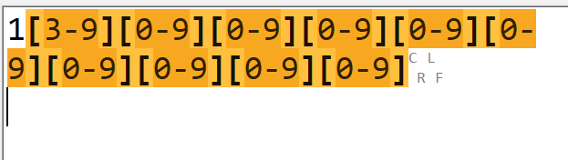
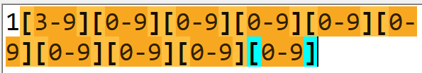
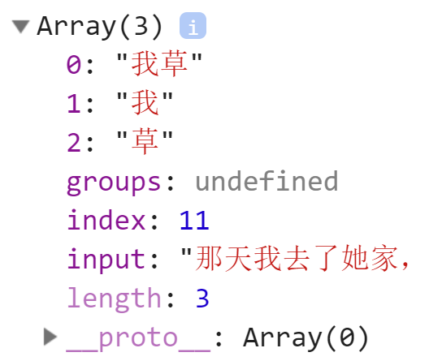
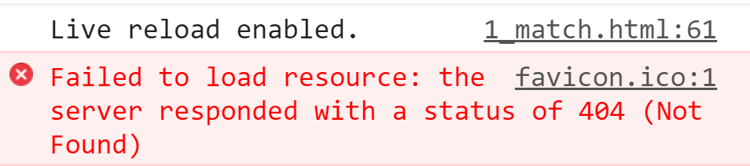

# 问题清单
# 我[槽，草，艹]也能匹配“我草”
答： “我，”也会被误判为敏感词
因为“，”放在[]也会作为一个普通的字符备选字
# 我艹[槽草]，不能匹配“我槽”
答：必须匹配3个字的词
| 槽 |
| 我 艹 |
| 草 |
# 正则命名写对了，却匹配不出敏感词或验证不正确
答: 正则表达式，开头，结尾，或中间不要有任何多余字符：空格，逗号，回车。比如

结尾的CLRF表示换行，会影响匹配的结果。
所以，见到多余字符必须删除

# 我[艹草操]不能匹配“草泥马”？
答：因为规则中规定必须是我字开头
| 艹 |
| 我 草 |
| 操 |
# 想防住我草中间的空格：我•+草
答：问题1： 为啥输入空格，出现点：RegExpBuddy工具中，空格都是用中点来表示的，怕咱们看不到。所以，上方规则框里的中点其实是空格。
问题2： 其实正则中防守空格，不能直接输入空格必须用\s，因为用户完全有可能按tab键。所以，今后，正则中空格一律用\s
问题3： 我草之间的空格，屌丝可能输入，也可能不输入，也可能输入多个。所以，应该是可有可无，多了不限，才能防守住不确定个数的空格。所以，应该改为\s*
# ..•[0-9A-Z]{5} 也能匹配：京A•12345？
答：正则不能以能不能匹配某一个词看是否正确。应该广泛测试，暴力测试。
.虽然可以匹配京和A，但是同样也可以匹配其它任何子，比如aa•12345也能匹配。范围太大了。所以，能匹配只是最低要求。是否能够完全覆盖相匹配的，屏蔽不想匹配的，才是正则是否正确的评判标准。
# \d{4}(\d{2})? 为什么?前要用()括起来?
答: \d{2}已经是一个完整的“字符集+量词”的组合了。不能再直接接量词。必须用()括起来才能接下一个量词。因为量词前即可接一个字符集，也可接一个分组来修饰分组出现的次数。
# 用\b是否可以匹配单词之间的所有空格？
答：不行。因为\b代表位置，而位置，不等于字符。
# 正则表达式不是只能匹配一个词吗？为什么可以匹配开头和结尾的空字符呢？
答: 正则表达式匹配时，是从字符串的开头开始匹配，一直匹配到结尾。发现几处符合要求的，就匹配几处。
^\s+|\s+$， 即可匹配开头，又可匹配结尾
^\s+|\s+$ -> ... ^\s+|\s+$ ->
但是，已经匹配过的敏感词，就不能参与下次匹配。下次匹配必须从本次敏感词之后才开始匹配。
# 或不是一旦匹配就不向后执行了吗？
答: |在本次匹配中，如果前一个条件满足则后一个条件不执行。但是这并不能阻止整个正则继续想后续字符串再次匹配。
# 即想匹配每个单词首字母，又想匹配每个单词末尾字母:
\b[a-z]\b
答: 不对的。这个正则的意思是，匹配两个单词边界之间只有一个字母的情况。
如果想即匹配单词开头的字母，又匹配单词结尾的字母：\b[a-z]|[a-z]\b
# 用live server打开网页，发现端口变成5501或5502，怎么办？
答: 现阶段不会有影响。如果非要改，5501和5502是因为端口冲突造成。可能开了多个vs code和多个live server。只要关闭所有vs code甚至重启电脑，再开vs code，可能就会恢复成5500。
# 希望的效果没出来？
答: 打开F12->Console，看问题！
# document.write("xxx")?
答: document.write()
网页 的 写()
可以向网页的内容中写一条HTML片段
仅初级调试使用。今后，不用。
# 为什么用模板字符串拼接字符串？和+拼接有什么差别？
答：今后开发中，都是用模板字符串拼接字符串。因为+会和程序中的加法计算产生歧义。功能上没有差别。
# 电子邮件的正则表达式:
答: \w+ 1个以上的合法字符
@ 必须有一个@
\w+ 1个以上的合法字符
. 必须有一个. 但是.是通配符，要转义为.
\w+ .后至少有一个后缀是一个以上的合法字符
.cn 最后的.cn可有可无
\w+@\w+.\w+(.cn)?
# 防守微信的正则表达式:
答: (微|w(ei)?) 汉字微或拼音wei，但是ei可有可无
\s* 可能有空格，也可能没有空格
(信|x(in)?) 汉字信或拼音xin，但是in可有可无
(微|w(ei)?)\s*(信|x(in)?)
# 为什么学nodejs?
答: 为了了解后端，为了自保！当功能出现问题时，可以判断出是那一端的责任。
# 多个页面中相同的部分，比如页头，页尾怎么做？
答：多个页面中共用的部分，单独做成一个.html文件，比如,header.html，单独调试样式和内容。
但是！千万不要用iframe引入！
在我这个阶段，会教大家用正确的ajax和vue两种方式引入公共部分。
# 如果git命令行有问题，怎么办？
答：下载有界面的github desktop
# match返回的数组中，房间号必须叫index吗？可以自己改名吗？
答：不可以。必须用index。
虽然关联数组的下标名，可以自定义，但是，那是在你自己创建关联数组的情况下。
现在这个数组是人家match函数返回的，不是你自己创建的。所以，人家返回什么样，就只能按照人家的要求用。
# 为什么输入0就可以拿到找到的敏感词呢？
答：match在找到敏感词后，会自动在内部创建一个数组，然后将敏感词放入数组的0位置。
然后再把数组交给我们。所以，人家放在哪个位置，我们就只能从哪个位置取。
就好像中午点盒饭，人家把肉菜放在第一个饭盒里，把素菜放在第二个饭盒里。那我们想吃肉菜，只能从第一个饭盒里取。
# match返回的arr数组长度应该是6个房间呀？为什么length为3？
答：因为length默认只能统计数字下标的房间个数。字符串下标的房间不参与统计。记住即可。没有为什么。
#  ？
答：这个右侧显示favicon.ico:1的错误不用管。是live servre运行时报的一个无关紧要的错误。
重新刷新页面就没有了。
# vs code下弹出错误: open a folder or workspace
答：vs code要用Live server运行，必须先打开一个文件夹，文件夹中再包含网页文件。不能直接打开网页文件运行。
# arr!=0 也可以？
答: !=是关系运算，关系运算中，左右默认隐式转为数字
如果arr返回null，也会被Number()隐式转为数字
Number(null)=0，所以可以和0作比较。
如果arr返回的是一个有内容个数组，也会被转为数字：Number([1,2,3])=NaN，NaN!=0 返回true条件成立。
但是，按照语义，必须写成arr!=null。
写程序，语义优先。还有，不要瞎改程序！
# 返回的敏感词一定放在0位置吗？
答：一定的！不会例外！因为浏览器自带的原生函数，都是ECMAScript标准固定好的，必须这么实现。不会有例外。
还有，写程序要有基本的人和人之间的信任。
# ajax四步或五步不会，怎么办？
答：根本没关系:
DOM: 我给你封装好了ajax()
jQuery: 人家也封装好了$.ajax()
VUE: 人家也封装好了axois.get()
# == === != !==
答: == !=是带隐式转换的等于比较
交给他们的两个值，都要先被隐式转换一下，再比较。可能和你的本意就不一致了。
=== !==是不带隐式转换的严格等于比较
绝对不会对给的两个值擅自加工。而是保持原样进行比较。多数情况下，都要用===和!==代替==和!=
但是，如果必须在不同类型数据之间作比较，需要先强制转换为一致类型，再用===和!==比较。
如果确实对js的隐式转换了如指掌，可以使用==和!=
# ***** Cannot read property 'xxx' of null或undefined
答: 凡是看到这个句式的错误，不是属性名写错了，也可能不是这句话写错了。很可能是xxx属性.前的变量，该拿到的值，没拿到！
解决: 往前找！找这个变量在哪里赋的值
# replace中的function，换成箭头函数，也能用
答: 暂时禁止使用箭头函数。因为箭头函数有坑，不是所有情况都能换。所以，必须等我讲完再用！
# replace(/xxx/,function(){...})中的匿名函数是因为那个()才被调用的？
答：回调函数，是一种我们只负责定义，不负责调用，而交给其他函数内部去自动调用的函数。所以，我们不可能看到回调函数被自动调用时的()。
这里replace()后的()是开始调用replace函数，不是调用内部匿名函数的()
function后的()，是定义函数的语法要求，不是函数调用。
所以，我们现在用肉眼看到的()，都和内部匿名函数自动调用无关。
# console.log(ltrim(str)) ltrim是回调函数?
答: ltrim绝不是回调函数，而是主动调用过了一次！ltrim(str)已经构成了标准的函数调用语法。
为什么ltrim(str)直接放在console.log()里？因为我想将ltrim()执行的结果，直接交给console.log()去打印
console.log(<- 结果 <- ltrim(str))
# ltrim()不加str，也能执行?
答: 每个函数都是一个独立的功能体，函数内部的变量应该尽量避免直接使用外部的变量名。
这里ltrim()不加str参数也可使用，是因为巧合。函数内的变量和全局变量str同名了。所以，就算你不给str，函数执行时会自动去全局找str变量用。
但是这样是不对的。因为外部变量名一旦变化，函数也连带着不能使用了。
所以，将来函数需要什么数据，必须通过形参从外部获得。而就不能直接使用外部的变量。
# var reg=/^\d{6}$/; reg.test(str)验证的是数字吗？
答: 验证的不是数字。而是字符串中的数字字符。
比如: 程序中123和"123"
虽然在页面上输入的是123456，但是所有从页面传入的数据，都自动加上了""变成了字符串
年龄:
26
↓
程序中
var age=input.value;
age:"26
# 将/^\d{6}$/换成new RegExp("^\d{6}$")为什么不对？
答： 正则的\d和js中字符串本身的\转义字符冲突了！解析时，js先将\d看做自己的转义字符，但是js中又没有\d这个转义字符，所以js擅自将\d前的\去掉了！
解决: 如果用new RegExp()其中的\d都要转为\d，第一个\是在告诉js，后边的东西不要动，不需要你解析！
但是\u4e00和\u9fa5不用保护。因为js认识\u
# if(arr!=null)...arr.index ... arr[0] ...就正确如果改为...arr.index ... arr[0] ...}while(arr!=null); 报错
答: 如果arr有可能是null的话应该先判断不是null，才能使用。如果将条件放在后边的while中，则顺序变为先使用，后判断，就失去了对arr=null的防护。
# 在vs code中按Ctrl+/，出现的不是注释，而是{% comment %}？
答: 禁用插件中的django template
# 在vs code中用boot没有提示？
答: 安装bootstrap3 snippets 或bootstrap4 snippets插件
# 如果调用cook(。。。)函数，但是没有用变量wan接，是不是就没有执行return？
答：函数只要调用，都会完整执行。return也是语句，当然也会被执行。这和外部用不用变量接无关。 就好像现实中，家人煮好面条了，问你吃还是不吃。你可以选择不吃，也可以选择拿碗吃。但是，不会因为你不吃面，家里人煮面的步骤就会少一步。这是不可能的。 必须把晦涩的程序和现实结合起来。因为程序也是人根据现实中的经验创造的出来的。都离不开现实。
# vscode中，按tab键不会自动补全？
答：可以点菜单"编辑"->Emmet展开缩写，效果是一样的 也可能是右下角不是html的问题。
# var fun=100; 是将地址值改为100，所以找不到函数才报错吗？
答:无论是普通的number数值，还是一个对象的地址值，对程序来说，都是无差别的一个数据。只要是一个数据就可以保存在变量中 fun=100只是用一个整数100数据，替换了原来保存在变量中的地址数据。 报错，是因为，语法规定，如果fun中保存的是一个数字，则数字后是不能跟()，像函数一样调用的。 fun=100替换后，函数对象的地址是不会改变的，一个对象的地址，一旦创建，就不会改变了。就像现实中的手机号。
# 为什么声明两个同名函数，函数定义不同，也会覆盖？
答：js中，函数名其实就是一个普通的变量。函数体其实是一个对象。函数名中保存着函数对象的地址值。函数名变量通过函数对象的地址值，找到函数对象。就像现实中打电话找人一样。 声明两次同名函数，意味着，先创建一个函数名变量，然后将第一个函数对象的地址保存到函数名变量中。此时，函数名变量暂时通过第一个函数对象的地址值指向第一个函数对象。 第二次声明同名函数时，不会重复创建函数名变量，而是将新函数对象的地址，覆盖到函数名变量中现有旧函数对象的地址。就像手机通讯录里，将一条通讯录中的地址换成另一个人的手机号。从此，函数名变量，就和旧函数再无关系。而是用新函数对象的地址，引用着新函数对象。
# js var a=10 function foo(){ console.log(a); //10a=20;} foo(); console.log(a) //20
答：10和20, 因为程序中，自始至终只有一个变量a，无论函数内，还是函数外，用的都是一个全局变量a。对a做任何修改，都是修改的一处。都会影响后续操作a的值。 如果换成:
var a=10
function foo(){
console.log(a); //undefined
var a=20;
}
foo();
console.log(a) //10
结果变为undefined和 10
首先：其实程序中不止一台hoist起重机。其实每个函数内的顶部，都各自带一个起重机。
在调用函数时，都会先再函数内声明提前，再执行。上面程序会变为:
var a=10
function foo(){
//hoist
// |
// |
// J
var a; //undefined
console.log(a); //undefined
a=20; //这里因为函数中有局部变量a了，优先使用局部变量，所以，不会影响全局。且局部变量，在函数调用后，就释放了。
}
foo();
console.log(a) //10 //所以，除了函数，全局a还是10
# console.log(fun()); //2 undefined，为啥输出带一个undefined
答：因为函数fun(){}内部没有return，就没有返回值，返回到函数外部。所以，凡是没有return的函数，都不能直接打印执行结果，打印输出的都是undefined。
只有函数内部有return的函数，才能直接输出函数的调用结果。
# var fun=100; console.log(fun()) 结果为什么不是100？
答：程序有严格的语法规定。如果想使用变量中的值，就不能加()。如果想调用变量引用的函数，执行一段任务逻辑，就必须加()。
所以写程序前必须先要知道变量中存的是什么，然后再想想打算怎么用这个变量里的东西。
如果变量中引用的是一个函数，想调用函数，就必须fun()
如果变量中保存的是一个值，想输出值，就不能加()。
这里，如果想输出变量的值，就应该console.log(fun)
如果想输出函数调用后执行的结果，就要console.log(fun())
执行时，先调用fun()，如果有返回值，会放到console.log()中输出。
如果没有返回值，console.log()没有接到结果，就输出undefined。
# 函数和方法的差别?
答: 函数和方法，本质都是function，也就是都是函数
严格来说:
不属于任何对象的独立的function称为函数
比如: parseInt() parseFloat() isNaN()
保存在对象内的函数，称为方法，也称为method
比如: arr.sort() reg.test() str.toUpperCase()
数组的下标和length，不是方法，也不是函数，而是属性。属性不做事儿，只存值。
# ajax四步能不能包装在匿名函数中？
答：凡是可能反复使用的函数，就不能用匿名函数！
比如ajax四步，将来一定会封装在一个叫ajax的有名字的函数中被反复调用。
# console.log(window.a)输出undefined，而console.log(a)，就报错，难道window.a是全局，a就不是全局？
答: 所有全局变量一定是保存在window中的
保存在window中的变量其实有两种访问方式:
可以以变量语法方式: 变量名
可以以window对象的成员形式使用: window.变量
比如:
var a=10;
console.log(a) //10
因为所有没有前缀的，js都会自动加上window.前缀——仅限于全局作用域中执行的程序 比如:
alert() -> 执行时被补全为window.alert()
再比如
parseInt() -> 执行时被补全为window.parseInt()
console.log(window.a) //10
如果没有声明a，执行console.log(a)和console.log(window.a)，一个报错，一个不报错？ 语法规定: 如果直接访问一个不存在的变量，会报错！ReferenceError: a未定义 如果强行访问对象中一个不存在的属性，或访问数组中一个不存在的位置，不报错！而是返回undefined。 全局变量a，其实都有两个角色，一个是单纯的变量a，同时也是window对象中的成员。所以，以单独变量方式访问不存在的变量，则参考第一条规则，会报错。如果以window.a成员的方式访问变量a，永远不会报错！而是返回undefined。 补: var a和 window.a
- 如果未声明变量a，则单独使用a会报错，而使用window.a不报错。
- var a的变量不能用delete彻底删除 而用window.a强行添加的变量，才能被delete彻底删除
总结
今后即使用全局变量，也要用window.变量。不要用var。因为如果不想用了，还可以用delete彻底删除
# pay=null后，为什么变量pay还在？
答: 给pay变量赋值为null，只是清空变量的内容，而变量在window中不会被删除。
如果希望彻底删除变量: delete window.变量
但是: 删除不掉！
原因: pay是var pay创建的。如果想用delete彻底删除变量，创建变量时，必须用window.pay
# console.log(a) //报错，为什么不是undefine?a=10;console.log(a)
答？因为a=10前，没有var。没有var，就不是声明语法，就不会会被声明提前。不会被声明提前，第一次使用时就没有a可用，就报错。a=10，只是一个赋值语句。赋值语句会强行创建变量a，但是，也只能在语句所在位置才创建a。因为声明提前规定，“”赋值留在原地“
# 为什么加入overflow:hidden或添加元素设置为display:table，可防止高度坍塌？BFC？
答: Block Formatting Context
以块的形式，格式化显示元素的子内容
为什么: 启用BFC模式都是为了避免子元素被隐藏或遮挡。
如何启用BFC：
浮动元素：float 除 none 以外的值。
绝对定位元素：position (absolute、fixed)。
display 为 inline-block、table-cells、flex。
overflow 除了 visible 以外的值 (hidden、auto、scroll)
后果:
- 父元素启用BFC，则范围必须包含所有子元素的范围。
- 平级子元素启用BFC，则其他兄弟子元素不能覆盖在它之上。
# 作用域到底是什么？
答: 作用域其实就保存变量的对象。只有两种作用域对象:
全局作用域对象: window
函数作用域对象：一般看不见，也没有。只有在调用函数时，在内存中临时创建。函数作用域对象中保存的是本次函数调用使用的局部变量。
# 反复调用外层函数parent()，为什么变量值不变？和调用内层函数pay有什么差别？
答: 调用内层函数pay是一个小孩儿，反复花自己的红包
反复调用父母parent()，是反复生小孩儿，反复包红包。
# 如何从外部访问到闭包中的变量:
答: 不让访问！如果能从外部随便访问，不叫闭包！
其实，是有办法看到的！
输出函数在内存中的结构： console.dir(pay)
dir可输出对象在内存中的详细存储结构
每个函数输出后都可看到一个属性[[scopes]]，这就是还有列表。里边在不调用时，暂时只有window或window和父母的作用域。
# 为什么在修改之前输出对象的内容和修改后输出的内容都是修改之后的新内容？
答: console.log()和console.dir()不是给对象拍照的意思，不是留住对象瞬间的状态。而是输出对象的引用地址。
当程序结束后，我们点击三角展开对象时，控制台才临时去内存中找对应的对象的内容。此时，程序已经结束，所以无论点开哪个三角，看到的只能是最后的修改值。
解决: 分布注释，解开注释，调试程序，查看阶段的输出结果。不要最后一股脑都输出。
# 为什么调用外层函数必须用变量接住返回值？
答: 如果想获得外层函数的返回结果，必须自己用变量接一下。如果不接，第一，无法获得内容。第二，不能重复使用。
因为只要重复使用的东西，都要保存在变量中
# 如果外层函数只用一次，怎么办？
答: 绝大多数情况下，父母函数确实只要产生一次闭包，就不再使用。 解决: 如果一个函数只用一次，都可用匿名函数自调 比如:
var pay=(function(){
var total=1000;
return function(money){
total-=money;
console.log(`本次花了${money}元，还剩${total}元`)
}
})();
pay(100);
结果: 父母函数调用一次后释放，但是孩子函数和父母函数的作用域对象都被保留下来。
# getN(), nAdd(), getN() 为什么只有两个输出？
答: nAdd没有输出，也没有返回值。
# 给nAdd前加上var，会怎样?
答: 报错，nAdd未定义。因为nAdd成了局部变量。函数外不可使用。
# 在nAdd中改成console.log(n++)为什么输出999?
答: 因为是后++，先输出n旧的值，然后再对n+1
# 禁止使用"name"作为变量名?
答：因为window中有一个固定的常量叫name，不可替代。
# 为什么关联数组ym里明明有三个成绩，但是ym.length是0？
答：数组的length属性，紧紧记录数字下标的元素个数。自定义下标名称的元素，是不参与length统计的。
# var lilei2=clone(lilei) 是什么意思？
答：调用clone函数，并将lilei对象作为参数，传入clone函数中处理。将clone函数的返回值，赋值给lilei2变量保存。
就好像，把玉米粒，放到爆米花机里，爆出爆米花，再将爆出的爆米花，装到袋子里保存起来。